About Me
Hi!
My name is Leonardo Masi. I am a Master’s Student in Robotics, Automation and Electrical Engineering at the University of Florence, with a background in in Biomedical Engineering.
Thank you for taking a few minutes to review my portfolio and know more about my work. This document showcases the most significant projects I have completed recently.


2
Rover Perseverance | Mission Simulator

Line follower path with color waypoints

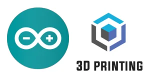
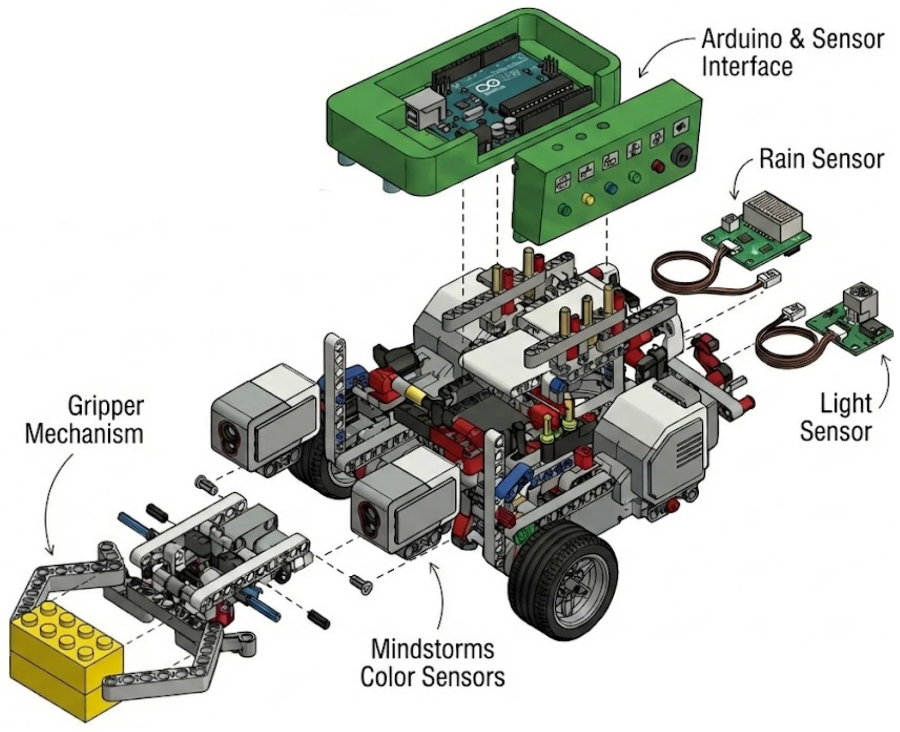

4
Robot explosion
Development of a sensor system for measuring force distribution when grasping objects
Bachelor’s Thesis Project
• Overview
Developed a sensorized object to measure and map force distribution during grasping tasks. The project was part of a research initiative to evaluate the performance of a hand exoskeleton developed by the university laboratory. By identifying high and low-pressure points during a "grasp," the system provided essential data to optimize the exoskeleton’s mechanical design and control algorithms for more natural and effective human-robot interaction.
• Technical Implementation
• Designed the test object using SolidWorks and fabricated using 3D printing technology;
• Developed the data acquisition system using Arduino;
• Conducted experimental trials wearing the lab’s hand exoskeleton;
• Performed precision soldering and wiring of the sensor matrix;

Sensor object developed

Hand exoskeleton
Robotics Manipulation Challenge
Master’s Exam
• Overview
Developed an automated robotic manipulation pipeline using a Franka Research 3 robotic arm equipped with an Intel RealSense D435i RGB-D camera. The system relies entirely on ROS Noetic to perform pick-and-place operations of objects with different shapes and colors, ArUco marker recognition and tracking, and object detection. Experimental tests were conducted both in simulation (Gazebo and Rviz) and on the real robotic setup
• Technical Implementation
• Implemented a multi-node ROS Noetic system managed by a central node communicating via ROS topics and action clients.
• Performed preliminary tests and trajectory planning in a simulated environment using Gazebo and Rviz
• Validated and executed the full manipulation and perception pipeline on the physical Franka Research 3 robot

6
Robotics Manipulation Challenge
Master’s Exam
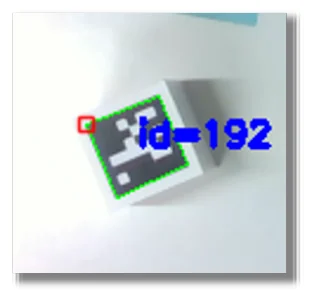
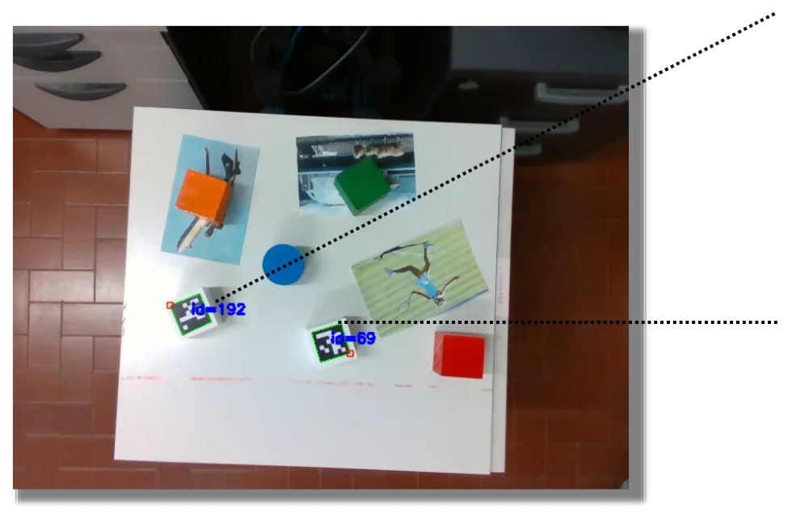
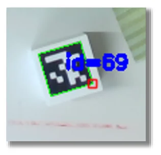
Aruco Recognition
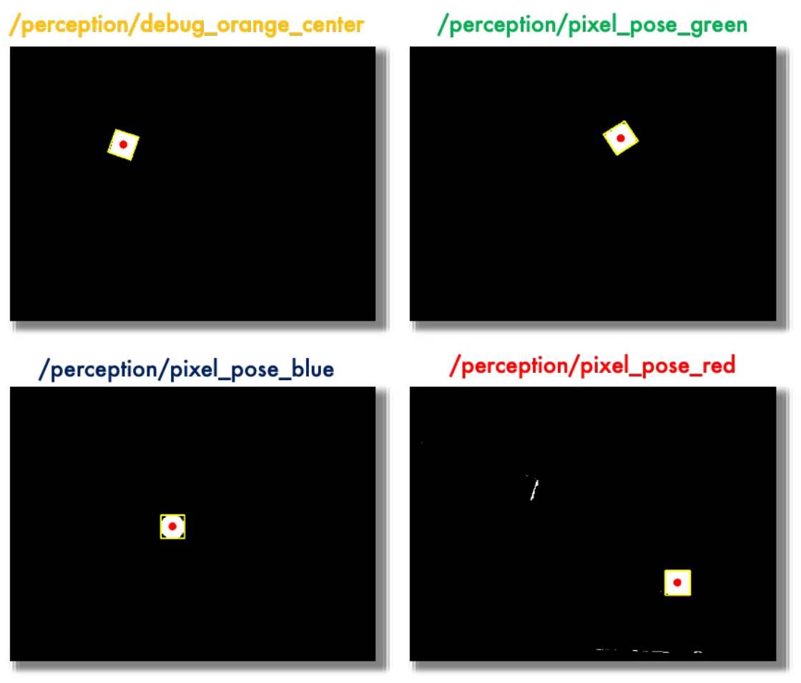

Compute color objects centroid for pick and
Object Recognition Yolov8
place
7
Development of a sensor system for measuring force distribution when grasping objects
Bachelor’s Thesis Project

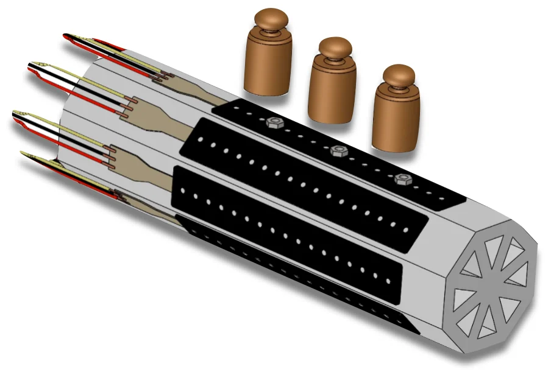
Studying and testing of sensor with weight
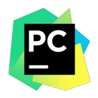
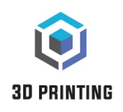
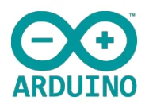
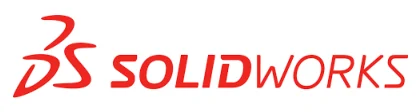
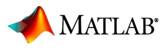
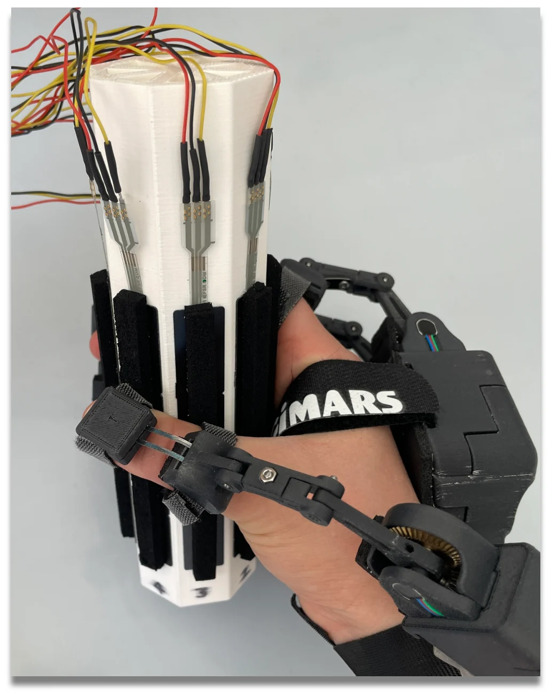
• Result
Identified the major areas of pressure concentration wearing exoskeleton after testing sensor on male and female subjects.
Explored alternative strategies and materials to further enhance data acquisition accuracy.
Experimental grasping trials with
wearable hand exoskeleton
8
Performance Analysis of Lidar L1 in Indoor and Outdoor Environments
Master’s Project Work
• Overview
Conducted a comprehensive performance evaluation of the Unitree Lidar L1 sensor to determine optimal operational parameters for autonomous navigation. The study focused on assessing the sensor's precision and reliability across diverse environments, analyzing how installation height, orientation, and atmospheric conditions impact data quality. This benchmark analysis provides critical insights for optimizing SLAM (Simultaneous Localization and Mapping) algorithms in varying operational scenarios.
• Technical Implementation
• Utilised ROS (Robot Operating System) to interface with the Lidar L1 and capture high-frequency spatial data;
• Exported raw data into CSV formats for statistical analysis and performance mapping;
• Use MATLAB for advanced processing of point clouds and to validate the consistency of SLAM-generated maps;
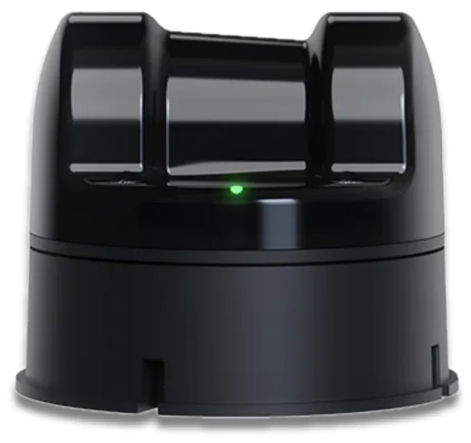
L1 Unitree Lidar

Example of acquisition
9
Circuit for estimating cardiac pulsation
Master’s Project Work
• Overview
Designed and prototyped an analog electronic system for real-time heart rate monitoring using non-invasive photoplethysmography (PPG). The project focused on the complete development of a signal conditioning chain, from raw optical data acquisition to a filtered analog output, demonstrating core skills in medical instrumentation and precision analog design.
• Technical Implementation
• Utilised a TCRT1000 reflective optical sensor to detect micro-vascular blood volume changes through a photodiode;
• Designed a dual-stage conditioning circuit based on the LM358 operational amplifier;
• Performed full PCB assembly and hardware validation, utilising soldering and professional laboratory instrumentation, including oscilloscopes, signal generators, and multimeters, to characterize system response and signal integrity;

Electronic Schematic

Assembled PCB
10
Modeling and Identifying Vehicle Dynamics
Master’s Project Work
• Overview
Validated mathematical models for vehicle dynamics to accurately predict and identify system behavior. The project focused on a simulation-driven approach to characterise the response of complex mechanical systems under varying operational conditions, ensuring high reliability in dynamic state estimation.
• Technical Implementation
• Performed Non-linear Grey-box Identification using the IDNLGREY object in MATLAB to estimate physical parameters from experimental data;
• Repeat the process with real data from Volvo V70 car;

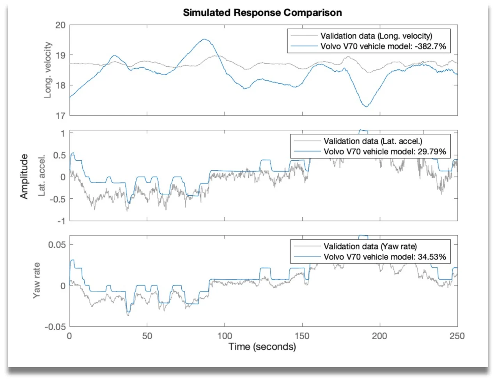

11
RoboCup Junior Experience
Team Leader

RoboCup Junior Empoli - Me (on the left) and my team


Example of a race circuit
13
RAMI Competition La Spezia
Visitor experience
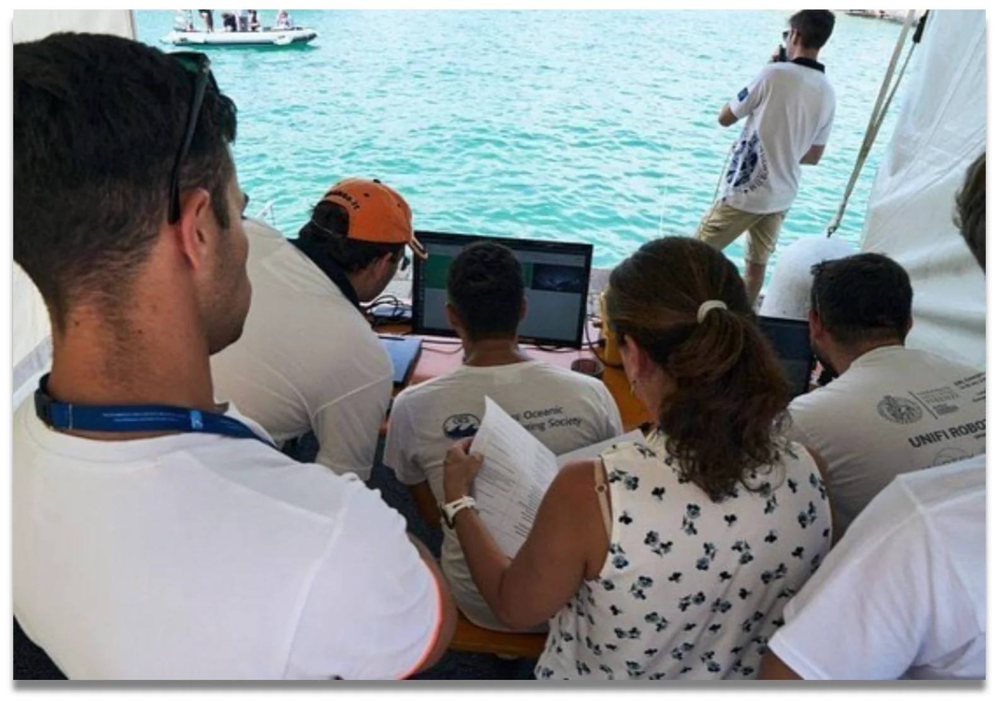
RAMI Competition La Spezia 2023

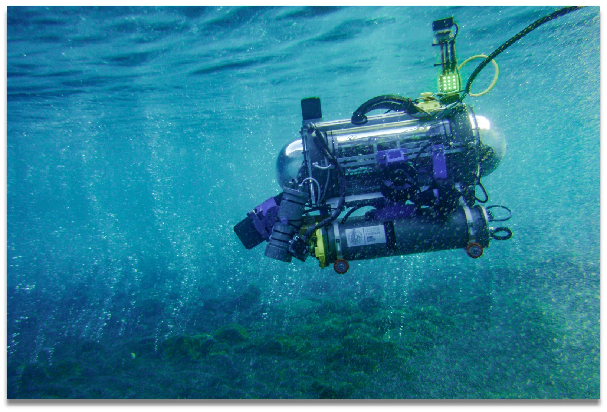
FeelHippo AUV - The UNIFI Robotics Team's robot
14
DIY Project
Personal Project

Iron Man mask 3D printed
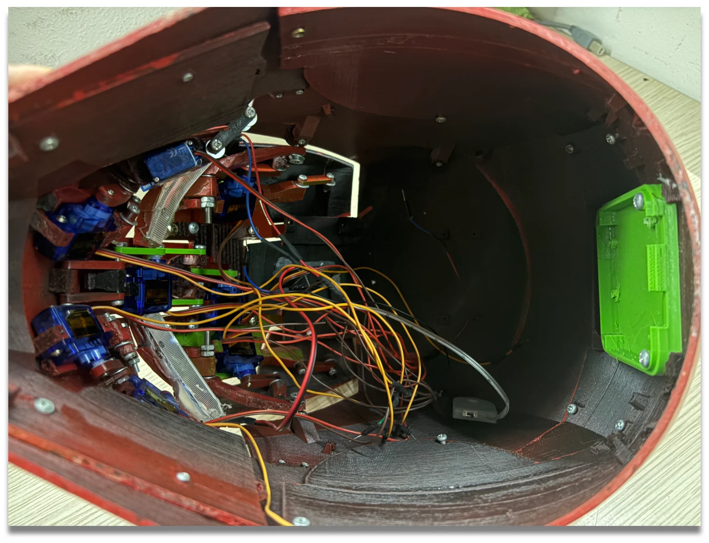
Cable connections and green 3D-printed support for Arduino
15